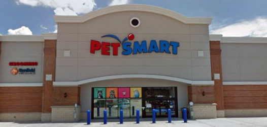

Visit Us This Saturday!
Our volunteers bring animals to PetSmart adoption events every Saturday. No appointment needed — just stop by and say hello. Bring the whole family and find your perfect match!
Come meet our animals in person. We host adoption events every Saturday at our Valley Ranch PetSmart location.
Our volunteers bring animals to PetSmart adoption events every Saturday. No appointment needed — just stop by and say hello. Bring the whole family and find your perfect match!

